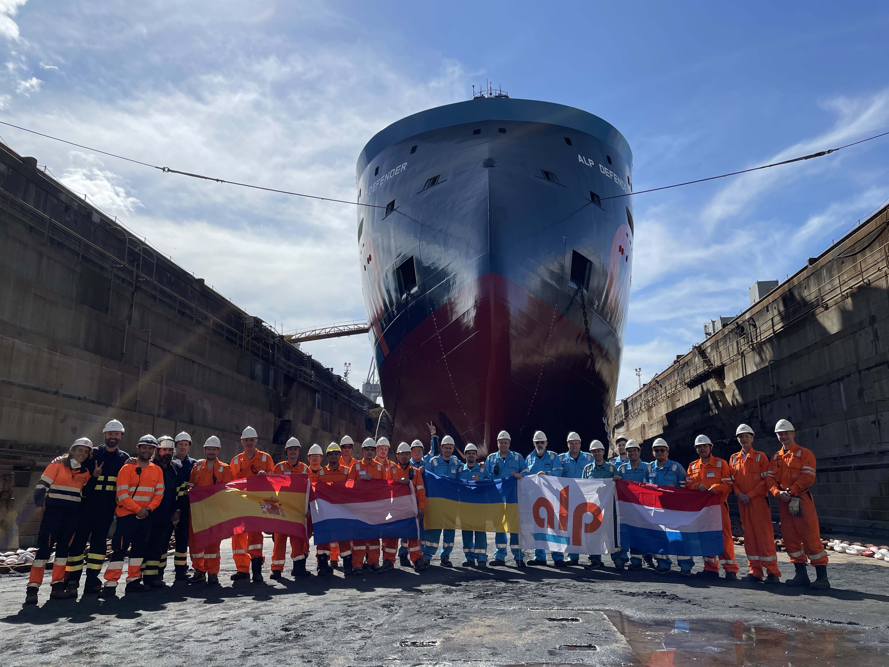

Предисловие
Моряк – одна из древнейших профессий. Люди еще тысячи лет назад научились строить лодки и парусники, ориентироваться по звездам и использовать силу ветра в своих целях. Сегодня моряки ходят уже совсем на других судах – с автоматическим оборудованием и GPS. Но суть профессии осталась той же – как можно быстрее добраться из точки А в точку Б, сохранив при этом груз, судно и жизнь.
Меня когда-то спросили: "Ты моряк, наверно очень умный?". На что я ответил - был бы умным то не пошел бы работать в море.
Многие моряки работают от 4-х месяцев до 9-ти на судне, а дома как правило бывают 3-5 месяцев. То есть по факту мы продаем свою жизнь морю. Лично я работаю 8 недель через 8 недель, на судне которое вы можете видеть на фотографии выше.
Посадка на судно
Каждый раз когда я лечу на судно - это почти всегда разные страны и города. За тот период который я работаю в море мне приходилось садится на суда в Азербайджане, Казахстане, рашкепидорашке, Румынии, на Кюрасао, в Намибии, Англии, Голландии, Тринидаде и Сингапуре. Иногда дорогая занимает по несколько суток и приходится лететь двумя, тремя и даже четырмя самолетами. Иногда длаже есть возможность немного насладиться достопримечательностями и местным коллоритом. На фото ниже мой второй визит в Намибию, осенью прошлого года
Должность, работа, команда
Для экономии вашего внимания я раскажу только о судне на котором я работаю с 2019 года, немного по должности, специфике работы и досуге на судне. И так поехали....
Должность
На сегодняшний длень я занимаю должность "Второй помощник Капитана" или как принято говорить на английском языке "Second Officer".В мои обязанности входит:
- Несение вахты
- Обслуживание и подготовка навигационных карт для предстоящего маршрута или проекта
- Обслуживание и проверка радио-навигационного оборудования
Работа
Тип судна на на котором я работаю назыввается AHTS, что значит Ocean Going Anchor Handling Tug & Salvage в переводе на еще более понятный язык - Буксир занимающийся трансконтинентальными транспартировками других судов, якорезаводкой, а так же поиском и спасением других судов.В основном мы выполняем такие работы:
- Буксировка других судов, нефтехранилищ, газо и нефетеперабатвающих заводов.
- Спасение судов терпящих бедствие в результате потери главных двигателей
- Tanker Lifting или Удержание нефтиеналивных судов во время их прогрузки непосредсвенно с плавучего нефтехранилища
Команда
На моем судне экипаж состоит из 20 человек. Конкретно здесь я работал с Шотрандцами, Голландцами, Филипинцами, Украинцами и Испанцами Экипаж делится на Механиков, Судоводителей и Палубную команду
- Судоводители + Палуба
- Капитан
- Старший помощник
- Второй помощник
- Третий помощник
- Боцман
- Матрос 1-го класса
- Матросс 2-го класса
- Повар
- Стюард (помощник повара)
- Кадет
- Механики
- Старший механик
- Второй механик
- Третий механик
- Электрик
- Моторист 1-го класса
- Моторист 2-го класса
- Кадет
- Судоводители + Палуба
На фото выше экипаж моего судна в первые месяцы войны. На тот момент мы были в Испании. В синих костюмах стоят Механики и в оранжевых Судоводители, палубная команда и судовладелец (Второй справа). Я же стояю крайний справа
Проекты
Одним из последних проектов была помощь другому судну в установке якорей для будущего нефтерерабатывающего завода на глубине 1500 метров в Гаяне.
Наша задача была проверять насколько хорошо якоря вкопаны в грунт и выдержат ли нужную нагрузку. Если вдруг кому интересно я могу в следующих статьях болле подробно об этом. а пока просто немного фото с проекта
Списание и дорога домой
Самый ожидаемый момент в конце конртакта это тот момент когда капитан приносит тебе твои Fly Details (билеты на самолет). Чемодан уже почти собран, с дому звонят и спрашивают что тебе приготовить вкусного к приезду. В принципе процедура отъезда обратна процедуре посадки на судно. Так же иногда бывает возможность насладиться некторыми достопримечательностями страны отлета.